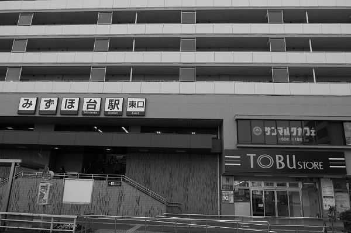
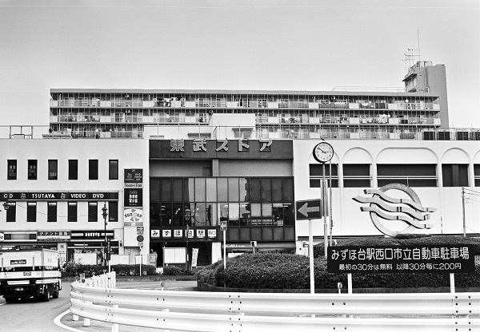

みずほ台駅 Mizuhodai
柳瀬川駅←← 東武東上線 →→ 鶴瀬駅

2018/3 DP1

2018/3 DP1

2018/3 DP1

2018/3 DP1

2018/3 DP1

2017/12 ﾐﾉﾙﾀCLE 35mm Acros

2017/12 ﾐﾉﾙﾀCLE 35mm Acros

2016/11 PentaxSP Tessar2.8/50 Acros

2016/10

2011/2

2011/1

